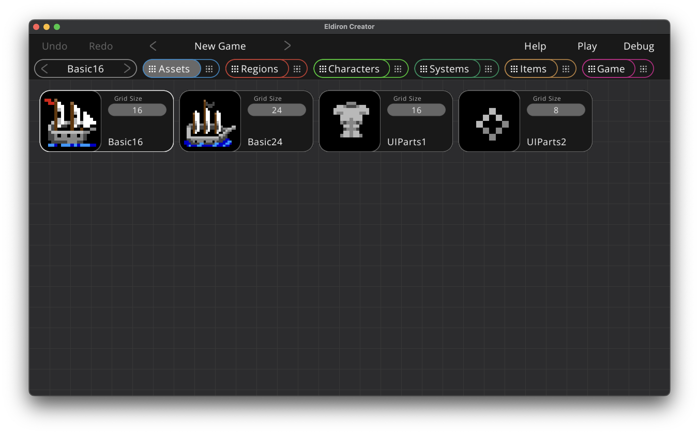

Introduction
Eldiron is a cross-platform creator for classic role-playing-games (RPGs). It's main aim is to create games similar to the RPGs of the 80's and 90's but with modern features as well as support for single and multi-player experiences.
Eldiron consists of Eldiron Creator, a desktop application available for macOS, Windows and Linux, and various clients (and a server) which will run the created games on nearly any device.
Eldiron v1.0 is under active development and scheduled for Q1 2023. V1 will be able to create games similar to Ultima 4 and 5 with 3D retro regions and dungeons scheduled for v1.5.
Later goals are support for more perspectives (like isometric) and much more.
Installation
Installing from source
Eldiron is written in Rust, to run it you have to install Rust and its package manager cargo. Please follow the instructions on this page.
After you successfully installed Rust, clone the repository (or download the source via a .zip file), open a terminal, navigate to the Eldiron directory and start Eldiron Creator with cargo run --release.
Steam
Once Eldiron is in pre-release it will be available on its Steam page.
Projects
Eldiron Creator stores it's game projects in the Eldiron directory in your desktops Documents directory. When first started Eldiron will ask for the name of your first game project (the default name is New Game) and create the project with the default starter content.
When Eldiron is not running, you can rename game folders to change the name of the game, delete or copy game folders.
The design goal for Eldiron projects was to make sharing of game content between games as easy as possible. Most game components are saved in individual files to allow sharing them with others. Each section of this book will mention where the corresponding game data is saved.
Game projects consists of two directories: assets and game.
Assets Directory
The assets directory contains all static data of the game.
-
The audio directory contains all audio assets of your game. Only WAV files are currently supported.
-
The fonts directory contains all fonts used by the game, to install new fonts just copy new fonts into this directory and on the next restart of Eldiron they will show up in the relevant font selectors.
-
The tilemaps directory contains all tile-maps. Tile-maps are PNG images which contain game tiles. Copy new images into this folder and they will show up in the Tiles view upon restart. Eldiron will create .json files for each tile-map which include the user defined meta data for the tiles.
The name of each file represents the in-game name of the represented entity. For example you can just rename a character file to rename the character itself. Eldiron will perform the same action when asked to rename a character.
Game Directory
The game directory contains all user created data for the game, such as regions (drawn via tiles in the region editor) or character behavior graphs.
Each folder name represents the type of game content it contains and matches the user interface sections in Eldiron and in this book (i.e. regions, characters, systems and items) with the game behavior located directly in the game directory.
You can share individual files with others, but there are some dependencies you have to be aware of:
-
Region files need the tile-maps used to draw the region in the assets/tilemaps directory.
-
Systems behavior files may be dependent on variables defined in the characters which invoke them.
Node Graphs & Scripting in Eldiron

Node graphs in Eldiron are a mix between nodes and scripting and try to combine the best of both worlds. The overall flow of execution is defined via nodes, while parameters of nodes are expressions or scripts which can be as complex as needed.
This has the advantage that you can easily visualize the overall flow of execution in a graph while adding details to behavior via node parameters which do not clutter up the node graph.
For example in the above screenshot the Go Raiding behavior tree executes the Pathfinding node which guides the character to a certain position or area in a region.
While the pathfinding is ongoing, i.e. the character did not reach its destination yet, the node connected to the terminal on the right side of the pathfinder node is executed. If the character successfully reached its destination the green OK terminal at the bottom of the pathfinding node is executed, if an error occured, for example the way to the destination is blocked for a longer period of time, the red ERROR terminal at the bottom of the pathfinding node is executed.
The Speed property of the pathfinding node is a number expression between 1 (the slowest) and 10 (the fastest, which is one movement per game tick).
You could just set the expression to
#![allow(unused)] fn main() { 8 }
as the speed.
Or as we do in the above screenshot you could set to
#![allow(unused)] fn main() { 9 - d2 }
which is 9 minus a dice throw of 2 (a random number of one or two) which gives a bit of a random speed, as this expression is evaluated for every movement the speed varies while the character is walking from tile to tile.
Or if things get more complex you could check if the character is on horseback or not or which usage role the current tile the characer is standing on has (for making the character walk slower in forests or hills).
Behavior Trees
Every node graph in Eldiron (except area nodes which are more simple) utilizes behavior trees to break up the overall behavior into smaller, easily understandable chunks.
A behavior tree is just a node with several terminals at the bottom which get executed from left to right. You typically rename the behavior tree to indicate what behavior the tree is executing, for example Go Raiding, or Talk and Combat.
Every behavior tree node has an Execute property which indicates when the tree is executed:
- Always. The behavior tree is always executed if the graph is not locked.
- On Startup. The behavior tree is only executed once when the graph is created.
- On Target. The behavior tree is executed when somebody is targetting (i.e. interacting) with the character. You can than decide to lock a certain tree which handles the given situation (combat, having a talk or selling something) and unlock the tree when the situation is handled and normal behavior is resumed.
Behavior trees perform the AI for non-player-characters (NPCs) and connect input commands from the Player character to the right player action (see the characters section).
All behavior trees in a graph are listed as tabs at the top of the graph. Select the given behavior to edit it.
When you debug a game, the graph will visualize which node connections are being executed by coloring executed connections in orange.
User Interface of Eldiron Creator
Eldiron Creator has two main toolbars.
The Control Toolbar
The top one is called the control toolbar and has these functions:
- Undo / Redo. The undo / redo state depends on the current view. Not all views have undo support.
- Project Switch. You can switch through your current game projects by clicking the < > arrows.
- Help. Opens this book on the currently displayed view section.
- Play. Plays the game.
- Debug. Debugs the game. This is mostly useful in the Region, Character and System views as you can visually see the node connections which are currently executed. Also you can monitor the variables in the Characters view as they always reflect the in-game state.
The View Toolbar
You can select the current view in the view toolbar (Assets, Regions, Characters, Systems, Items and Game). All views have two states, an overview state which shows all elements in an overview (activated by pressing the left part of the view button) and the detail state which shows an editor for the currently selected element (activated by pressing the right part of the button).
All views also have keyboard shortcuts between '1' to '7'.
To the left of the view buttons is also an element switch, you can use its < > buttons to switch through all available elements in the current view (or use the tab key to cycle through the currently visible elements).
Assets View: Overview
In the assets overview you can add to and edit the assets of your game.

The assets overview displays a node for each asset present in the assets directory.
Assets currently are:
-
Audio files.
-
Tile-maps. The icon displayed for the node is the tile set as default tile in the details view. You can set the grid size of the tile-map (the size of the square tiles in the tile-map) by clicking on the Grid Size property of the node.
You can edit the details for a given asset by clicking the preview thumbnail of the asset node you want to edit.
Details: Tile-maps

The tile-maps details view lets you assign meta-data for each tile in the tile-map. This is an important step as Eldiron needs to know how each tile is supposed to be used in-game.
You can click on a tile to select it (or multi-select tiles by clicking and dragging the mouse over a range of tiles).
The most important step is to give each tile a usage role, this can be one of:
- Unused - This tile is ignored and will not be shown in the region editor.
- Environment - This is the default tile type for any kind of non blocking terrain. Use it for grass, floors etc.
- Road - Same as Environment but the AI in the Pathfinder node will prefer road tiles over environment tiles.
- Blocking - Every Environment tile which is not accessible to the player, like rocks, mountains, walls etc.
- Character - Character tiles, like animation tiles for a warrior.
- Utility - Utility character tiles. Like a ship or a horse.
- Water - Water tiles. Tiles where a ship can go.
- Effect - Effect tiles, like an explosion.
- Icon - In game icons for inventories etc (swords, armor etc.).
- UI Element - UI elements for screens and widgets.
When you click the Enter Tags button you can assign command separated tags to a tile, like cupboard or waterfall. Tags are always lower case. Tags can be used to quickly find tiles or to auto-convert regions to different tile-maps (not yet implemented).
By clicking the Set Anim button you create an animation for the first tile in the selected range. The other tiles will be set to Unused by default.
The Clear Anim button will remove an animation sequence form the currently selected tile.
The Set Default button will set the currently selected tile as the default tile of the tile-map, it will be shown as the tile-map thumbnail in the overview.
Regions View: Overview

Regions in Eldiron can be towns, dungeons, the world itself, i.e. anywhere the characters can go. You can paint regions with the tiles you defined in the assets view. The behavior of tiles depends on the properties you set for the tiles in the tile-map details view.
If you want to create a new region you can simply drag and drop the Regions item on the left into the overview. You can rename and delete regions using the context menu of each region node (located in the upper right of each node).
Opening the region details is as simple as clicking the preview thumbnail of the region node you want to edit.
Region Details View
The details view has different modes which allow you to edit different aspects of a region:
- Draw Tiles. The drawing mode. Hotkey: 'D'.
- Edit Areas. Define areas and edit their behavior. Hotkey: 'E'.
- Characters. Place character instances in the region. Hotkey: 'C'.
- Settings. Edit the settings of the region. Hotkey: 'S'.
You can select the mode by clicking on the mode widget (which has a redish color) or by pressing the hotkey of a mode.
Drawing Tiles

In the bottom of the view you have the tile selector. The tiles being shown depend on the currently selected valid usage role, which is one of Environment, Road, Blocking, Water and UI Element.
You can filter which tiles do show by:
- Cycling throw the tile-maps using the button at the top of the left sidebar (All shows the tiles of all tile-maps which is the default).
- Entering a tag, for example door, would only show tiles with a door tag.
While drawing you can select which layer to draw on, Eldiron supports 4 layers of transparency, with layer one having the lowest transparency level and four the highest.
The Remap buttons remaps all tiles in the region. This is necessary because the usage role of the tile is saved in the region itself. If you change the role of a tile in the assets view, for example from an environment tile to a blocking tile, you need to remap the region to update the role of the tile.
Edit Areas

Areas are a group of tiles in a region which share common behavior. For example they may teleport the character entering it to a certain location, set a trap, open a door or send a message if you are near a sign. Apart from assigning behavior itself, areas can also be used from character nodes to go to a certain area or walk along a path defined by the area tiles. And lastly they can also modify the visual appearance of a tile, like for example emitting light.
You can cycle through the areas in your region by using the button next to the red Edit Areas button. Pressing the Add Area button will create an empty new area (that means no tiles are assigned to this area yet). You can Delete and Rename areas by pressing the respective button.
Clicking on a tile in the region will add the tile to the current area if the Add Tile mode is active, if it is set to Remove the tile will be removed from the area.
Behavior Nodes
To add behavior to an area just drop nodes from the left sidebar into the graph below the region view. Area nodes work a bit different than other nodes in Eldiron. They do not utilize behavior trees but rather use nodes which query the current occupation state of an area, for example if the player (or another character) just entered or exited the area. These nodes have a green color. You can add multiple green nodes to an area and connect area behavior to them.
Characters
When in the character mode, clicking on a tile in the region will create an instance of the currently selected character at the tile. You can select the characters in the character view below the region.
Characters are added if Add Instance is active, if Remove is active the clicked instance of a character is removed.
Missing features for v1.0:
- Name character instances.
- Optionally call a character script function on initialization (to set random character attributes or level).
- Define which character instance is the debug instance which is shown in the character view.
Settings
In the settings you can tune many region specific settings.
- background. A hex color used as the background color of the region while drawing. Default is *#000000#, i.e. black.
Missing features:
- A lot